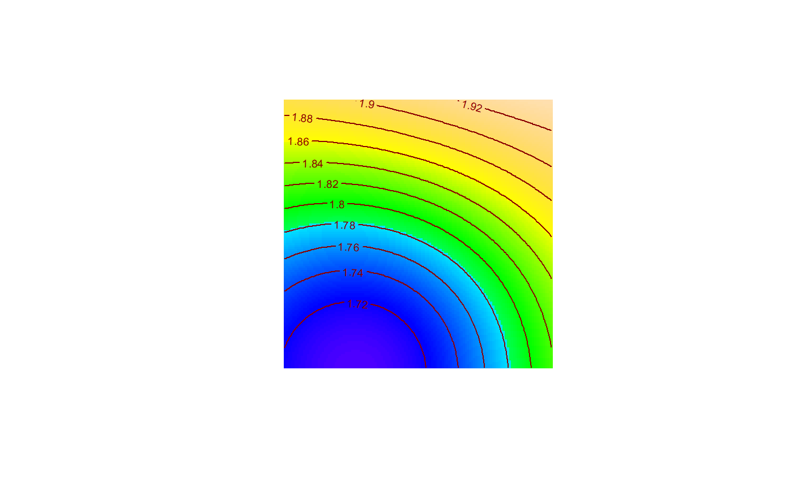

MapPlot.RdMap Spatialized Communities
MapPlot(x, ...) # S3 method for Accumulation MapPlot(x, Order, NeighborHood, AllowJitter = TRUE, Nbx = 128, Nby = 128, Contour = TRUE, Palette = grDevices::topo.colors(128, alpha = 1), Contournlevels = 10, Contourcol = "dark red", ..., CheckArguments = TRUE)
| x | An object to map. |
|---|---|
| ... | Further parameters. |
| Order | The order of diversity. It can be a number or a character string, interpreted as the value of $q$. |
| NeighborHood | The neignborhood size. It can be a number or a character string, interpreted as the value of the number of neighobors or the distance. |
| AllowJitter | If |
| Nbx | The number of columns (pixels) of the resulting map, 128 by default. |
| Nby | The number of rows (pixels) of the resulting map, 128 by default. |
| Contour | If |
| Palette | The color palette of the map. |
| Contournlevels | The number of levels of contours. |
| Contourcol | The color of the contour lines. |
| CheckArguments | If |
MapPlot.Accumulation returns an autoKrige object that can be used to produce alternative maps.
Map an "Accum" object.
MapPlot fails if q.seq is a scalar
# Generate a random community spCommunity <- rSpCommunity(1, size=50, S=10) # Calculate the species accumulation curve accum <- DivAccum(spCommunity, q.seq=c(0,1), n.seq=4, Individual=TRUE)#> ================================================================================# Plot the local richness, accumulated up to 5 individuals. MapPlot(accum, Order=0, NeighborHood=5)#> Warning: valeur d'argument hors intervalle dans 'bessel_k'#> Warning: valeur d'argument hors intervalle dans 'bessel_k'#> Warning: valeur d'argument hors intervalle dans 'bessel_k'#> Warning: valeur d'argument hors intervalle dans 'bessel_k'#> Warning: valeur d'argument hors intervalle dans 'bessel_k'#> Warning: valeur d'argument hors intervalle dans 'bessel_k'#> Warning: valeur d'argument hors intervalle dans 'bessel_k'#> Warning: valeur d'argument hors intervalle dans 'bessel_k'#> Warning: valeur d'argument hors intervalle dans 'bessel_k'#> Warning: valeur d'argument hors intervalle dans 'bessel_k'#> Warning: valeur d'argument hors intervalle dans 'bessel_k'#> Warning: valeur d'argument hors intervalle dans 'bessel_k'#> Warning: valeur d'argument hors intervalle dans 'bessel_k'#> Warning: valeur d'argument hors intervalle dans 'bessel_k'#> Warning: valeur d'argument hors intervalle dans 'bessel_k'#> Warning: valeur d'argument hors intervalle dans 'bessel_k'#> Warning: valeur d'argument hors intervalle dans 'bessel_k'#> Warning: valeur d'argument hors intervalle dans 'bessel_k'#> Warning: valeur d'argument hors intervalle dans 'bessel_k'#> Warning: valeur d'argument hors intervalle dans 'bessel_k'#> Warning: valeur d'argument hors intervalle dans 'bessel_k'#> Warning: valeur d'argument hors intervalle dans 'bessel_k'#> Warning: valeur d'argument hors intervalle dans 'bessel_k'#> Warning: valeur d'argument hors intervalle dans 'bessel_k'#> Warning: valeur d'argument hors intervalle dans 'bessel_k'#> Warning: valeur d'argument hors intervalle dans 'bessel_k'#> Warning: valeur d'argument hors intervalle dans 'bessel_k'#> Warning: valeur d'argument hors intervalle dans 'bessel_k'#> Warning: valeur d'argument hors intervalle dans 'bessel_k'#> Warning: valeur d'argument hors intervalle dans 'bessel_k'#> Warning: valeur d'argument hors intervalle dans 'bessel_k'#> Warning: valeur d'argument hors intervalle dans 'bessel_k'#> Warning: valeur d'argument hors intervalle dans 'bessel_k'#> Warning: valeur d'argument hors intervalle dans 'bessel_k'#> Warning: valeur d'argument hors intervalle dans 'bessel_k'#> Warning: valeur d'argument hors intervalle dans 'bessel_k'#> Warning: valeur d'argument hors intervalle dans 'bessel_k'#> Warning: valeur d'argument hors intervalle dans 'bessel_k'#> Warning: valeur d'argument hors intervalle dans 'bessel_k'#> Warning: valeur d'argument hors intervalle dans 'bessel_k'#> Warning: valeur d'argument hors intervalle dans 'bessel_k'#> Warning: valeur d'argument hors intervalle dans 'bessel_k'#> Warning: valeur d'argument hors intervalle dans 'bessel_k'#> Warning: valeur d'argument hors intervalle dans 'bessel_k'#> Warning: valeur d'argument hors intervalle dans 'bessel_k'#> Warning: valeur d'argument hors intervalle dans 'bessel_k'#> Warning: valeur d'argument hors intervalle dans 'bessel_k'#> Warning: valeur d'argument hors intervalle dans 'bessel_k'#> Warning: valeur d'argument hors intervalle dans 'bessel_k'#> Warning: valeur d'argument hors intervalle dans 'bessel_k'#> Warning: valeur d'argument hors intervalle dans 'bessel_k'#> Warning: valeur d'argument hors intervalle dans 'bessel_k'#> Warning: valeur d'argument hors intervalle dans 'bessel_k'#> Warning: valeur d'argument hors intervalle dans 'bessel_k'#> Warning: valeur d'argument hors intervalle dans 'bessel_k'#> Warning: valeur d'argument hors intervalle dans 'bessel_k'#> Warning: valeur d'argument hors intervalle dans 'bessel_k'#> Warning: valeur d'argument hors intervalle dans 'bessel_k'#> Warning: valeur d'argument hors intervalle dans 'bessel_k'#> Warning: valeur d'argument hors intervalle dans 'bessel_k'#> Warning: valeur d'argument hors intervalle dans 'bessel_k'#> Warning: valeur d'argument hors intervalle dans 'bessel_k'#> Warning: valeur d'argument hors intervalle dans 'bessel_k'#> Warning: valeur d'argument hors intervalle dans 'bessel_k'#> Warning: valeur d'argument hors intervalle dans 'bessel_k'#> Warning: valeur d'argument hors intervalle dans 'bessel_k'#> Warning: valeur d'argument hors intervalle dans 'bessel_k'#> Warning: valeur d'argument hors intervalle dans 'bessel_k'#> Warning: valeur d'argument hors intervalle dans 'bessel_k'#> Warning: valeur d'argument hors intervalle dans 'bessel_k'#> Warning: valeur d'argument hors intervalle dans 'bessel_k'#> Warning: valeur d'argument hors intervalle dans 'bessel_k'#> Warning: valeur d'argument hors intervalle dans 'bessel_k'#> Warning: valeur d'argument hors intervalle dans 'bessel_k'#> Warning: valeur d'argument hors intervalle dans 'bessel_k'#> Warning: valeur d'argument hors intervalle dans 'bessel_k'#> Warning: valeur d'argument hors intervalle dans 'bessel_k'#> Warning: valeur d'argument hors intervalle dans 'bessel_k'#> Warning: valeur d'argument hors intervalle dans 'bessel_k'#> Warning: valeur d'argument hors intervalle dans 'bessel_k'#> Warning: valeur d'argument hors intervalle dans 'bessel_k'#> Warning: valeur d'argument hors intervalle dans 'bessel_k'#> Warning: valeur d'argument hors intervalle dans 'bessel_k'#> Warning: valeur d'argument hors intervalle dans 'bessel_k'#> Warning: valeur d'argument hors intervalle dans 'bessel_k'#> Warning: valeur d'argument hors intervalle dans 'bessel_k'#> Warning: valeur d'argument hors intervalle dans 'bessel_k'#> Warning: valeur d'argument hors intervalle dans 'bessel_k'#> Warning: valeur d'argument hors intervalle dans 'bessel_k'#> Warning: valeur d'argument hors intervalle dans 'bessel_k'#> Warning: valeur d'argument hors intervalle dans 'bessel_k'#> Warning: valeur d'argument hors intervalle dans 'bessel_k'#> Warning: valeur d'argument hors intervalle dans 'bessel_k'#> Warning: valeur d'argument hors intervalle dans 'bessel_k'#> Warning: valeur d'argument hors intervalle dans 'bessel_k'#> Warning: valeur d'argument hors intervalle dans 'bessel_k'#> Warning: valeur d'argument hors intervalle dans 'bessel_k'#> Warning: valeur d'argument hors intervalle dans 'bessel_k'#> Warning: valeur d'argument hors intervalle dans 'bessel_k'#> Warning: valeur d'argument hors intervalle dans 'bessel_k'#> Warning: valeur d'argument hors intervalle dans 'bessel_k'#> Warning: valeur d'argument hors intervalle dans 'bessel_k'#> Warning: valeur d'argument hors intervalle dans 'bessel_k'#> Warning: valeur d'argument hors intervalle dans 'bessel_k'#> Warning: valeur d'argument hors intervalle dans 'bessel_k'#> Warning: valeur d'argument hors intervalle dans 'bessel_k'#> Warning: valeur d'argument hors intervalle dans 'bessel_k'#> Warning: valeur d'argument hors intervalle dans 'bessel_k'#> Warning: valeur d'argument hors intervalle dans 'bessel_k'#> Warning: valeur d'argument hors intervalle dans 'bessel_k'#> Warning: valeur d'argument hors intervalle dans 'bessel_k'#> Warning: valeur d'argument hors intervalle dans 'bessel_k'#> Warning: valeur d'argument hors intervalle dans 'bessel_k'#> Warning: valeur d'argument hors intervalle dans 'bessel_k'#> Warning: valeur d'argument hors intervalle dans 'bessel_k'#> Warning: valeur d'argument hors intervalle dans 'bessel_k'#> Warning: valeur d'argument hors intervalle dans 'bessel_k'#> Warning: valeur d'argument hors intervalle dans 'bessel_k'#> Warning: valeur d'argument hors intervalle dans 'bessel_k'#> Warning: valeur d'argument hors intervalle dans 'bessel_k'#> Warning: valeur d'argument hors intervalle dans 'bessel_k'#> Warning: valeur d'argument hors intervalle dans 'bessel_k'#> Warning: valeur d'argument hors intervalle dans 'bessel_k'#> Warning: valeur d'argument hors intervalle dans 'bessel_k'#> Warning: valeur d'argument hors intervalle dans 'bessel_k'#> Warning: valeur d'argument hors intervalle dans 'bessel_k'#> Warning: valeur d'argument hors intervalle dans 'bessel_k'#> Warning: valeur d'argument hors intervalle dans 'bessel_k'#> Warning: valeur d'argument hors intervalle dans 'bessel_k'#> Warning: valeur d'argument hors intervalle dans 'bessel_k'#> Warning: valeur d'argument hors intervalle dans 'bessel_k'#> Warning: valeur d'argument hors intervalle dans 'bessel_k'#> Warning: valeur d'argument hors intervalle dans 'bessel_k'#> Warning: valeur d'argument hors intervalle dans 'bessel_k'#> Warning: valeur d'argument hors intervalle dans 'bessel_k'#> Warning: valeur d'argument hors intervalle dans 'bessel_k'#> Warning: valeur d'argument hors intervalle dans 'bessel_k'#> Warning: valeur d'argument hors intervalle dans 'bessel_k'#> Warning: valeur d'argument hors intervalle dans 'bessel_k'#> Warning: valeur d'argument hors intervalle dans 'bessel_k'#> Warning: valeur d'argument hors intervalle dans 'bessel_k'#> Warning: valeur d'argument hors intervalle dans 'bessel_k'#> Warning: valeur d'argument hors intervalle dans 'bessel_k'#> Warning: valeur d'argument hors intervalle dans 'bessel_k'#> Warning: valeur d'argument hors intervalle dans 'bessel_k'#> Warning: valeur d'argument hors intervalle dans 'bessel_k'#> Warning: valeur d'argument hors intervalle dans 'bessel_k'#> Warning: valeur d'argument hors intervalle dans 'bessel_k'#> Warning: valeur d'argument hors intervalle dans 'bessel_k'#> Warning: valeur d'argument hors intervalle dans 'bessel_k'#> Warning: valeur d'argument hors intervalle dans 'bessel_k'#> Warning: valeur d'argument hors intervalle dans 'bessel_k'#> Warning: valeur d'argument hors intervalle dans 'bessel_k'#> Warning: valeur d'argument hors intervalle dans 'bessel_k'#> Warning: valeur d'argument hors intervalle dans 'bessel_k'#> Warning: valeur d'argument hors intervalle dans 'bessel_k'#> Warning: valeur d'argument hors intervalle dans 'bessel_k'#> Warning: valeur d'argument hors intervalle dans 'bessel_k'#> Warning: valeur d'argument hors intervalle dans 'bessel_k'#> Warning: valeur d'argument hors intervalle dans 'bessel_k'#> Warning: valeur d'argument hors intervalle dans 'bessel_k'#> Warning: valeur d'argument hors intervalle dans 'bessel_k'#> Warning: valeur d'argument hors intervalle dans 'bessel_k'#> Warning: valeur d'argument hors intervalle dans 'bessel_k'#> Warning: valeur d'argument hors intervalle dans 'bessel_k'#> Warning: valeur d'argument hors intervalle dans 'bessel_k'#> Warning: valeur d'argument hors intervalle dans 'bessel_k'#> Warning: valeur d'argument hors intervalle dans 'bessel_k'#> Warning: valeur d'argument hors intervalle dans 'bessel_k'#> Warning: valeur d'argument hors intervalle dans 'bessel_k'#> Warning: valeur d'argument hors intervalle dans 'bessel_k'#> Warning: valeur d'argument hors intervalle dans 'bessel_k'#> Warning: valeur d'argument hors intervalle dans 'bessel_k'#> Warning: valeur d'argument hors intervalle dans 'bessel_k'#> Warning: valeur d'argument hors intervalle dans 'bessel_k'#> Warning: valeur d'argument hors intervalle dans 'bessel_k'#> Warning: valeur d'argument hors intervalle dans 'bessel_k'#> Warning: valeur d'argument hors intervalle dans 'bessel_k'#> Warning: valeur d'argument hors intervalle dans 'bessel_k'#> Warning: valeur d'argument hors intervalle dans 'bessel_k'#> Warning: valeur d'argument hors intervalle dans 'bessel_k'#> Warning: valeur d'argument hors intervalle dans 'bessel_k'#> Warning: valeur d'argument hors intervalle dans 'bessel_k'#> Warning: valeur d'argument hors intervalle dans 'bessel_k'#> Warning: valeur d'argument hors intervalle dans 'bessel_k'#> Warning: valeur d'argument hors intervalle dans 'bessel_k'#> Warning: valeur d'argument hors intervalle dans 'bessel_k'#> Warning: valeur d'argument hors intervalle dans 'bessel_k'#> Warning: valeur d'argument hors intervalle dans 'bessel_k'#> Warning: valeur d'argument hors intervalle dans 'bessel_k'#> Warning: valeur d'argument hors intervalle dans 'bessel_k'#> Warning: valeur d'argument hors intervalle dans 'bessel_k'#> Warning: valeur d'argument hors intervalle dans 'bessel_k'#> Warning: valeur d'argument hors intervalle dans 'bessel_k'#> Warning: valeur d'argument hors intervalle dans 'bessel_k'#> Warning: valeur d'argument hors intervalle dans 'bessel_k'#> Warning: valeur d'argument hors intervalle dans 'bessel_k'#> Warning: valeur d'argument hors intervalle dans 'bessel_k'#> Warning: valeur d'argument hors intervalle dans 'bessel_k'#> Warning: valeur d'argument hors intervalle dans 'bessel_k'#> Warning: valeur d'argument hors intervalle dans 'bessel_k'#> Warning: valeur d'argument hors intervalle dans 'bessel_k'#> Warning: valeur d'argument hors intervalle dans 'bessel_k'#> Warning: valeur d'argument hors intervalle dans 'bessel_k'#> Warning: valeur d'argument hors intervalle dans 'bessel_k'#> Warning: valeur d'argument hors intervalle dans 'bessel_k'#> Warning: valeur d'argument hors intervalle dans 'bessel_k'#> Warning: valeur d'argument hors intervalle dans 'bessel_k'#> Warning: valeur d'argument hors intervalle dans 'bessel_k'#> Warning: valeur d'argument hors intervalle dans 'bessel_k'#> Warning: valeur d'argument hors intervalle dans 'bessel_k'#> Warning: valeur d'argument hors intervalle dans 'bessel_k'#> Warning: valeur d'argument hors intervalle dans 'bessel_k'#> Warning: valeur d'argument hors intervalle dans 'bessel_k'#> Warning: valeur d'argument hors intervalle dans 'bessel_k'#> Warning: valeur d'argument hors intervalle dans 'bessel_k'#> Warning: Some models where removed for being either NULL or having a negative sill/range/nugget, #> set verbose == TRUE for more information#> [using ordinary kriging]